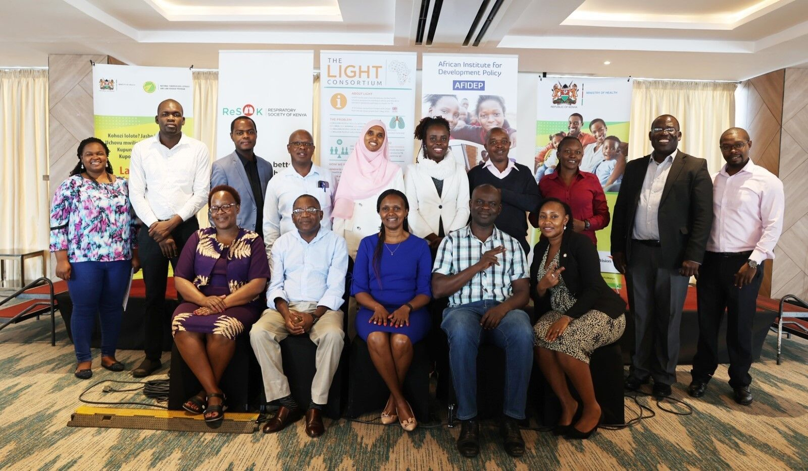
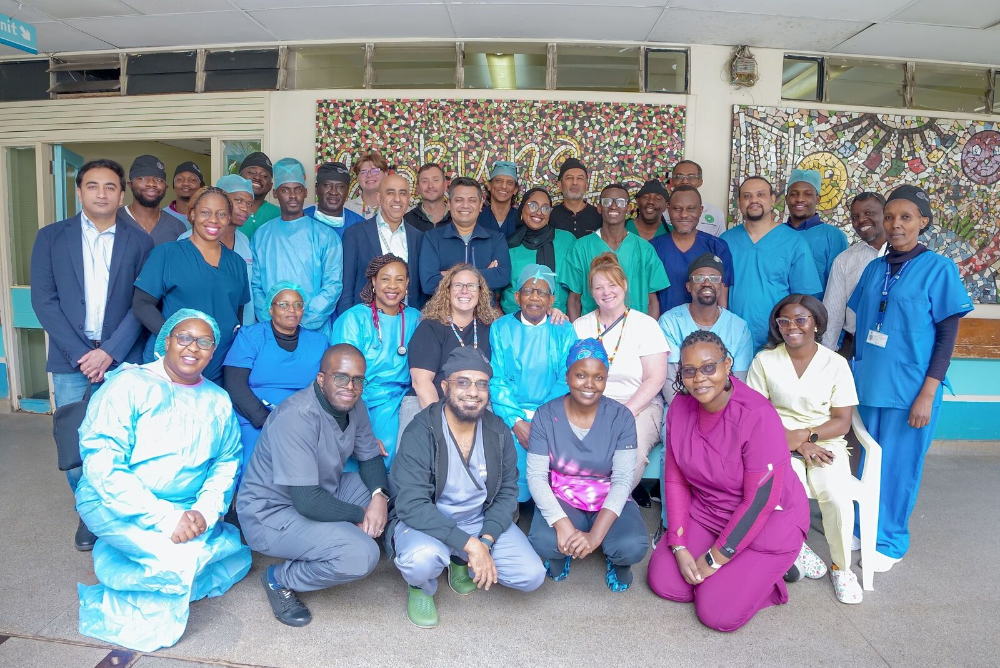
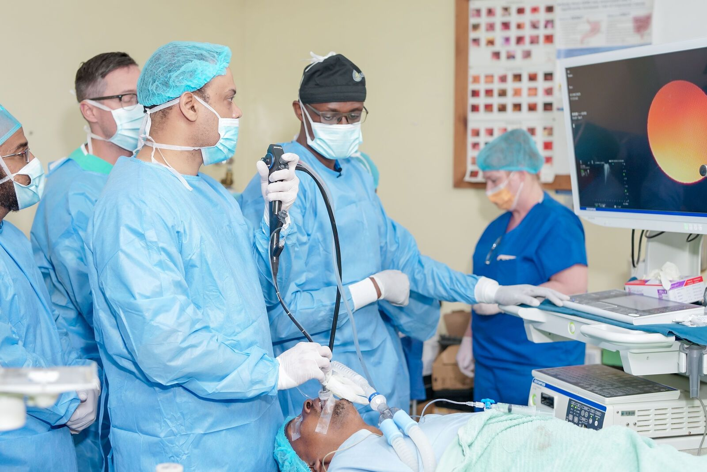
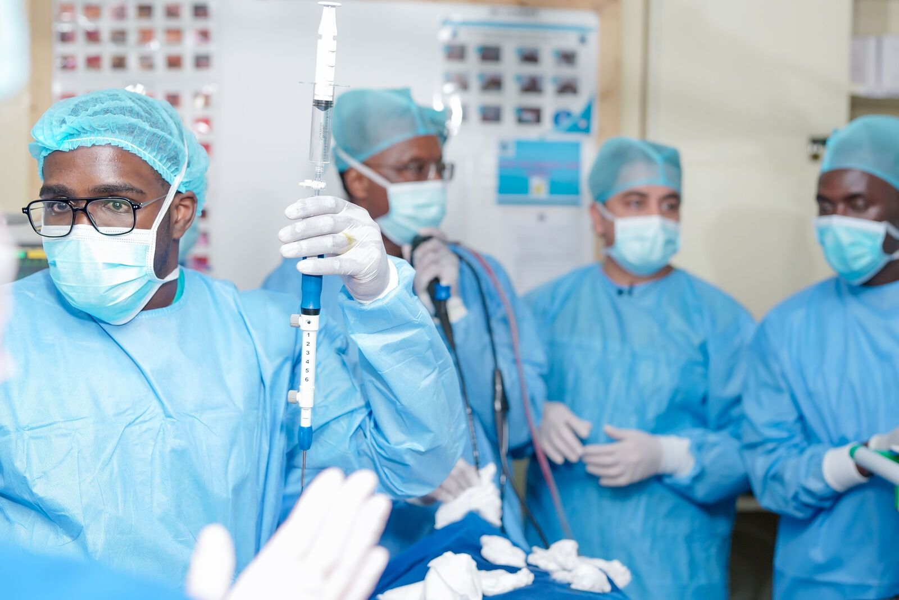
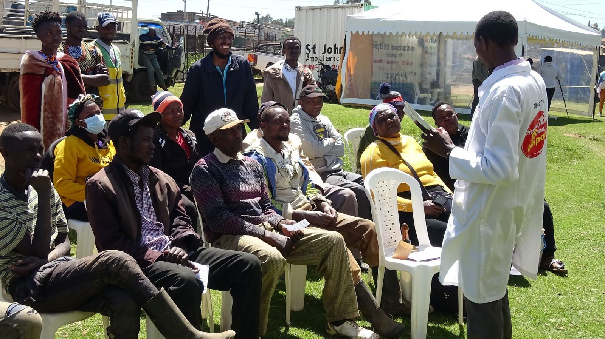
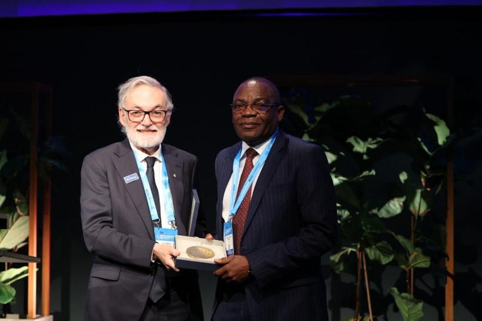
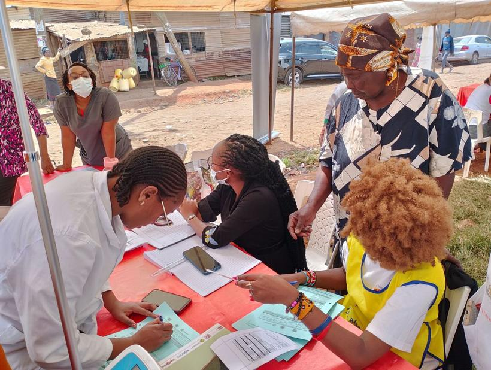
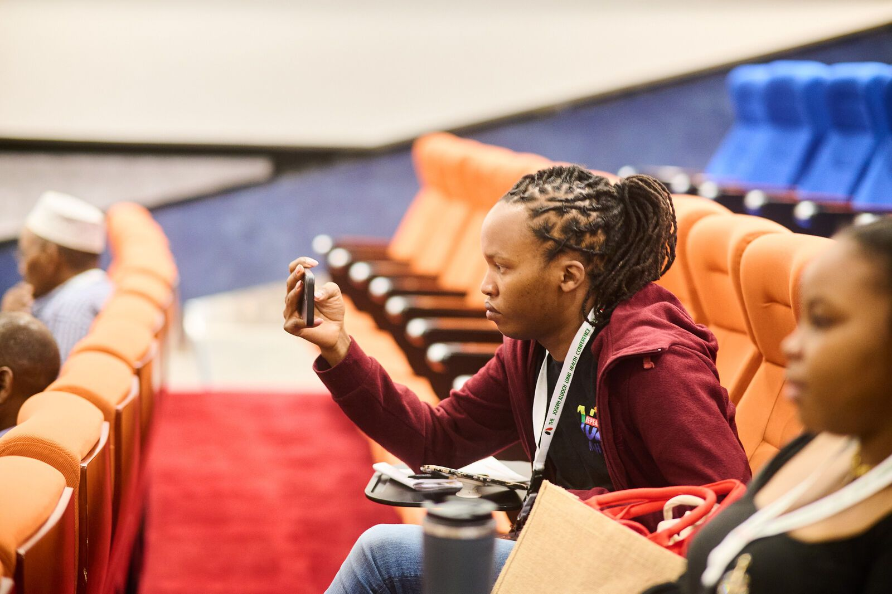

Respiratory Society of Kenya Formerly KAPTLD
Respiratory health in Kenya.
The professional society for clinicians, researchers and partners advancing lung health through prevention, research, education and advocacy.
01The Society
Kenya's professional home for respiratory health.
Formerly the Kenya Association for the Prevention of Tuberculosis and Lung Disease, ReSoK brings together health professionals with an interest in respiratory medicine — chest physicians, clinical officers, nurses, pharmacists and researchers.
Guided by the 2026–2035 Strategic Plan, the Society works through prevention, research, education, advocacy, multidisciplinary collaboration and policy advisory, in Kenya and beyond.
- Vision
- Healthy lungs for all people in Kenya and beyond.
- Mission
- To promote, improve, sustain and integrate quality lung health for all through prevention, research, education, advocacy and multidisciplinary collaboration.

Our values spell PUMZI — Swahili for breath.
- PPartnerships
- UUnderstanding
- MMeticulousness
- ZZeal
- IInnovation
02Education
Building respiratory expertise.
Hands-on workshops, accredited CMEs and webinars, scientific conferences — and soon a Virtual Academy — so that learning moves straight into patient care.
- Workshops & campsBronchoscopy, pleural procedures, thoracic ultrasound
- CMEs & webinarsCPD-accredited sessions, open to members and non-members
- ConferencesKISLHC and national symposia
- Virtual AcademyFree online lung-health courses · opening soon



Recent hands-on training
All workshops- Interventional Pulmonology & Advanced BronchoscopyCoast General, Mombasa2026
- Bronchoscopy & VATS CampMeTRH, Meru2026
- EBUS & Basic Bronchoscopy WorkshopKNH, Nairobi2026
- Kakamega Bronchoscopy CampKakamega2025
- Lung Biopsy WorkshopMombasa2025
- Pleuroscopy CampTwo-day camp2025
- Advanced Thoracic Ultrasound WorkshopNairobi2025
03Research
Research that moves lung health forward.

ReSoK partners on research programmes that shape how TB and respiratory disease are understood and treated across Kenya and Africa.
-
i.
LIGHT
A six-year UK aid-funded global health research programme transforming gendered pathways to TB care in urban settings. ReSoK is LIGHT's research partner in Kenya.
-
ii.
ITARA
Integrated Tuberculosis and Respiratory Care in Africa — a four-year NIHR-funded programme developing new approaches to integrated TB and respiratory care.
-
iii.
ALBORADA
Cambridge-Africa research into the epidemiology of interstitial lung disease in Kenya, and a national multidisciplinary approach to ILD care.

04Advocacy & lung health
From the clinic to the community.
Finding and treating TB
Active case finding with county teams in Kiambu, and private providers engaged in TB and lung-disease care across eight counties.
Raising awareness
World Lung Cancer Day, the Lung Cancer, COPD & Pulmonary Hypertension Awareness Month, and community screening outreach.
Informing policy
Supporting the Ministry of Health's national TB programme to pilot care for people living with post-TB lung disease.
TuberculosisPost-TB lung diseaseLung cancerAsthma & COPDClean airTobacco controlAccess to care
05Events
Where Kenya's lung-health community meets.
-
 05—08Aug 2026 Conference · Diani, Kwale
05—08Aug 2026 Conference · Diani, Kwale7th Kenya International Scientific Lung Health Conference
From Detection to Recovery — integrated pathways and patient-centred innovations in lung health.
-
Upcoming
01Oct 2026
CME · Online, Zoom
Diagnosing Bronchiectasis on Chest CT Scan
With consultant radiologist Dr Maxwell Gachie.
-
28Sep 2026
Webinar · Online
Infectious Lung Disorders: Spectrum of Surgical Treatment Options
-
29—30Sep 2025 Symposium · The Nairobi Hospital

TB & Lung Health Symposium
-
All events,
CMEs & CPD

06Membership
Become part of Kenya's respiratory community.
- CPDCertificates and records for accredited CMEs, webinars and workshops, kept in one place.
- LearningThe members' learning library and Virtual Academy courses.
- CommunityPeers across specialties and counties, at every conference, camp and CME.
- My ReSoKYour digital membership card, payments, renewals and certificates.
07Knowledge & news
From the field, the clinic and the lab.

The Union Medal winner

World Lung Cancer Day

A 10-day training programme for community health promoters in Kiambu

Screening outreach
One Society, one platform.
The design leaves room for the digital services the Society is growing into. Items marked concept are illustrations, not commitments.
- LiveMy ReSoKMembership, payments, card, certificates
- LiveCertificate verificationCheck any ReSoK certificate code
- OpeningVirtual AcademyFree online lung-health courses
- ConceptOn-demand learningRecorded CMEs and conference sessions
- ConceptResearch repositoryMembers' publications and abstracts
- ConceptMember directoryFind peers by specialty and county

Swahili for breath. The work of every member — for every breath in Kenya.